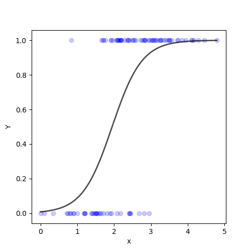

The fundamental equation of generalized linear model is:
g(E(y)) = ɑ + β X1 + ɣ X2
Here, g() is the link function, E(y) is the expectation of target variable and ɑ + β X1 + ɣ X2 is the linear predictor.
The simple linear regression equation with dependent variable enclosed in a link function:
g(y) = βo + β(h)---Eq(1)
Here, h is considered as the independent variable.
For any value of slope and dependent variable, exponent of this equation will never be negative.
p = e(βo + β(h))---Eq(2)
To make the probability less than 1, p must be divide by a number greater than p. This can simply be done by:
p = e(βo + β(h)) ∕ e(βo + β(h)) + 1---Eq(3)
Using Eq(1), (2) and (3), the probablity can be redefined as:
p = ey ∕ 1 + ey---Eq(4)
where p is the probability of success. This Eq(4) is the Logit Function.
If p is the probability of success, 1-p will be the probability of failure which can be written as:
q = 1 - p = 1 - (ey ∕ 1 + ey)---Eq(5)
where q is the probability of failure.
On dividing Eq(4) ∕ Eq(5) the result is,
p ∕ 1 - p = ey
After taking log on both sides,
log(p ∕ 1 - p) = y
log(p ∕ 1 - p) is the link function. Logarithmic transformation on the outcome variable allows to model a non-linear association in a linear way.
After substituting value of y,
log(p ∕ 1 - p) = βo + β(h)
This is the equation used in Logistic Regression. Here, (p ∕ 1 - p) is the odd ratio. Whenever the log of odd ratio is found to be positive, the probability of success is always more than 50%. A typical logistic
model plot never goes below 0 and above 1.
A typical representation of Logistic Regression graph is as below,
